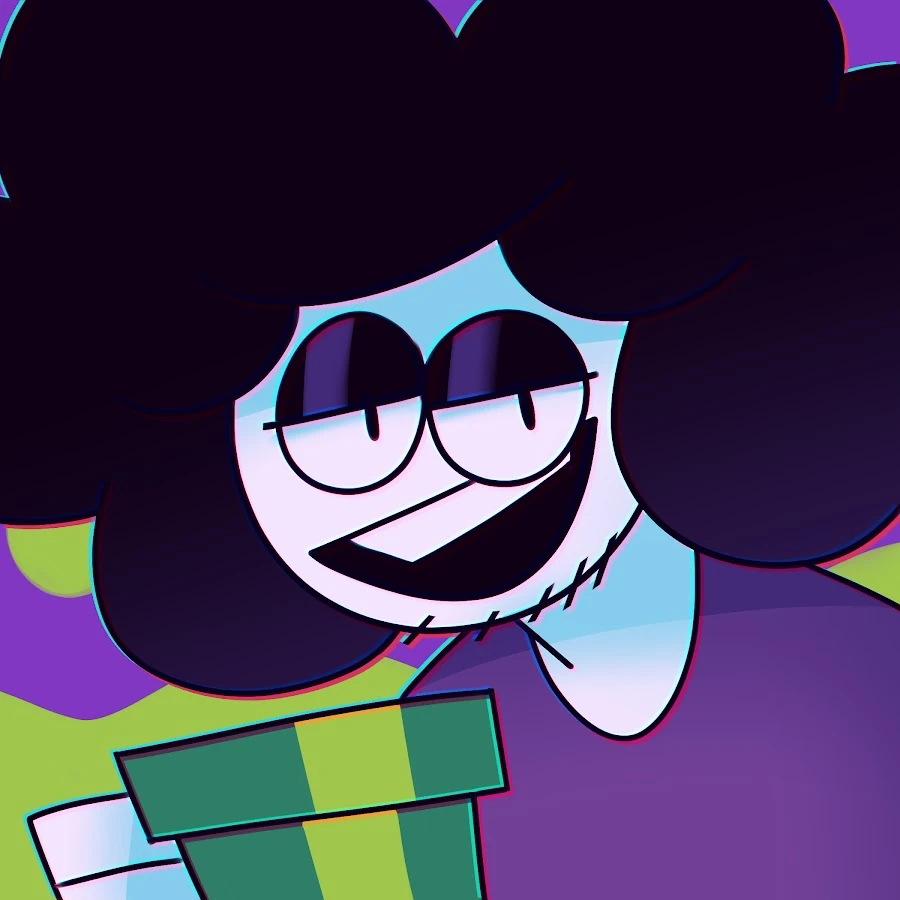

Equipo seleccionado para el Trabajo
Jaiden Animation
Jaiden Dittfach conocida por su seudónimo Jaiden Animations, es una Youtuber y animadora estadounidense conocida por crear videos de cuentos y animaciones en YouTube. Sus videos exploran una variedad de temas, que van desde sus experiencias hasta historias personales.

SrPelo
David Axel Cazares Casanova, mejor conocido como Sr Pelo (también llamado a veces Pepo o simplemente Pelo), es un youtuber, ilustrador, diseñador gráfico, animador, y actor de voces mexicano conocido por sus parodias animadas de videojuegos como Team Fortress 2, Super Mario y Undertale, así como la serie parodia Mokey's Show, una serie basada en los personajes de Mickey Mouse.
.jpg)
Piyoasdf
Muriel Benavides Torres mejor conocida como Piyoasdf es una youtuber chilena, otaku y cosplayer dedicada a tutoriales de dibujo, covers y speedpaints, cuenta con más de 1.000.000 suscriptores en su canal de YouTube. Sube de todo tipo, ya sea tutoriales de dibujos para el colegio, covers de canciones variadas (principalmente de kpop) y dibujos rápidos y dinamicos.